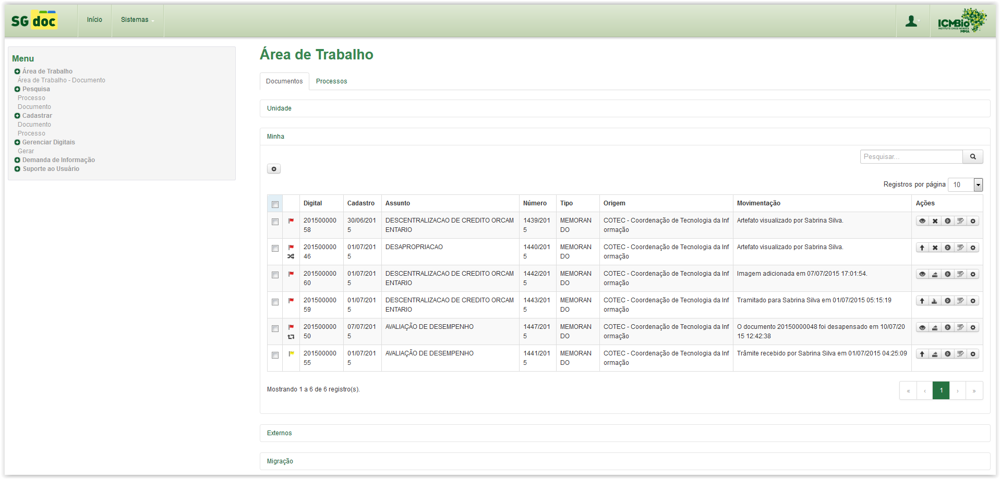

Tela principal do sistema
Após o login, o sistema SGDoc é apresentado da seguinte maneira:

Sistema SGDoc - Visão Geral
À esquerda da tela é apresentado o Menu , por meio do qual é possível acessar as funcionalidades do sistema, e à direita da tela é apresentada a Área de Trabalho , onde são listados documentos e processos e disponibilizadas as Ações pertinentes.
Por meio do botão (localizado na parte superior da tela) é possível Selecionar outro perfil (se o usuário tiver permissão), Alterar a Senha, acessar a Ajuda do Sistema e Sair do Sistema.
Created with the Personal Edition of HelpNDoc: Easily create iPhone documentation